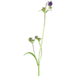
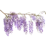

Symbol Grimoire
Purple

Devil's BitDulse
WisteriaWolf's BaneYerba SantaStones which are purple or indigo-colored are receptive and spiritual. Ruled by  Sagittarius and
Sagittarius and  Libra, they have long been associated with mysticism and purification. These are excellent stones to wear for meditation, psychic work or during any ritual designed to contact the subconscious mind.
Libra, they have long been associated with mysticism and purification. These are excellent stones to wear for meditation, psychic work or during any ritual designed to contact the subconscious mind.
As with green and blue stones, purple is the color of healing and peace. These stones are worn to maintain health and are sometimes given to unruly children to promote obedience. Physically, purple stones are utilized to relieve complaints in the head such as headache, mental illness, concussion and hair problems. They relieve depression and produce restful sleep when worn at night.
Purple stones are associated with organized religion as well as the more spontaneous, Earth-oriented systems. They are worn to contact higher forces.
Symbolic Overview
Purple, or indigo, is the color associated with the sixth chakra. Since it was first discovered, purple has been the color of choice to denote wealth and power. Emperors, kings, and the more powerful members of the clergy, such as bishops, choose the color as a way of defining their status. This is because the dye itself was originally available from one source and one source only: the secretions of a certain gland of an unfortunate sea snail called the Murex Brandaris. Therefore, purple was extremely costly to produce and strictly the color of those who could afford it, since the dye itself was more expensive even than gold.
The most popular shade of the color is called Tyrian Purple (named for the city of Tyre, where it was manufactured). Heracles' dog, which had a predilection for snacking on the snails he found along the seashore, is credited with having discovered the dye after his owner noticed the purple staining around his mouth. It is likely, however, that the Minoans on Crete discovered the purple pigment quite some time before Heracles' dog trotted into the picture. If the Minoan theory is true then the rare purple dye has been with us for at least 3500 years, so its associations with all things glorious and splendid are well embedded into the human psyche.
Qualities of Violet
Violet is associated with inspiration, spirituality, and the sacred. Violet is selfless, loving, tolerant, and intuitive. It enhances the imagination.
Etymology
The word violet comes from the Old French violete, which is a plant that produces a flower of this color. Purple comes from the Latin purpura. This was a mollusk that the Tyrian purple dye came from. Purple was an imperial color in ancient Rome.
Violet and purple are generally considered to be the same color, although some people believe that violet is slightly redder than purple.
Religious and Spiritual Significance
The Greek priests at Eleusis wore purple or violet robes. This shows how long spiritual qualities have been associated with violet. In Christianity, violet symbolizes the Passion of Christ and is the color of Advent and Holy Week. Some people believe that Jesus wore purple garments when he was crucified.
Religious Art
Violet symbolizes love and spiritual perfection. As it also symbolizes passion and suffering, Christian martyrs frequently wear it.
Virgin Mary: After the crucifixion, the Virgin Mary was depicted wearing violet.
Jesus: Jesus is sometimes shown in violet after his resurrection.
Mary Magdalene and Repentance: As Mary Magdalene is also shown wearing violet robes, this color became associated with everybody who repented their sins.
Violet flowers were used in ancient festivals because people believed that they would protect them from headaches and drunkenness.
Traditions and Symbolism
At one time, newborn babies were wrapped in purple cloth to encourage future fame, wealth, and success.
It is interesting to note that the U.S. military decoration, the Purple Heart, is awarded to soldiers who are wounded or killed in action. This decoration was established by George Washington in 1782 and was originally presented to recognize exceptional military merit. The choice of purple as the color is most likely because it exemplifies the extraordinary nature of the effort that warranted it.
Language and Expression
The term "purple prose" is used to describe florid, ornate, or hyperbolic language. The color purple is rich and vivid, and this has become related to the exaggerated style of writing that bears its name. People are also described as being "purple with rage" when they are extremely angry.
Color Healing Properties
Violet nourishes and purifies the blood. It stimulates the spleen, and is good for bone growth.
Bladder problems, concussion, cramps, epilepsy, insomnia, kidney problems, neuralgia, nervous disorders, rheumatism, sciatica, skin problems, tumors
Violet promotes enlightenment, revelation, and spiritual awakening. Holistic healthcare providers use violet to soothe organs, relax muscles, and calm the nervous system.
Personality of Violet
People drawn to violet are sophisticated, analytical, discriminating, spiritual, and highly intuitive. Their introspective and reserved nature demands abundant solitude. They are devoted to study and enjoy delving deep to uncover hidden truths. They maintain unique perspectives and prefer following their own path in all things.
Aversion to Violet
Disliking violet suggests intimidation by others' beliefs and rules. You may feel that people undervalue or ignore your faith and spirituality. Finding confidence in your spiritual path regardless of external validation becomes essential.
Missing Indigo
An absence of indigo indicates you are being taken advantage of or not fully appreciated by people close to you. Take time alone and breathe in indigo energy.
Missing Purple
An absence of purple signals temporary disconnection from your spiritual self. Spend time alone in a place that feels spiritual to you. Listen to uplifting music and inhale purple energy.
Supportive Uses of Violet
Violet reduces guilt, worry, stress, and inadequacy feelings. It facilitates finding inner peace and security. Violet promotes universal love that enables viewing others without judgment or criticism. It also encourages creativity. Wear violet when feeling nervous or needing protection from others' demands. Violet proves particularly helpful in situations involving potential overindulgence in food or drink.
Candle Magick Applications
Use purple when your goal involves spiritual endeavors or activities intended to benefit humanity as a whole. Purple supports service to others and higher purposes. It also relieves tension between friends, making it valuable for repairing friendships and fostering community bonds.
Dark Magick Applications
In baneful workings, purple candles serve to provoke tyranny, abuse of authority, and treachery. They can bring sadness and betrayal upon a target, corrupting power structures and sowing discord among those in positions of influence. Jupiter rules purple, and destructive workings using this color are best performed on Thursdays. For workings targeting psychic faculties, perform them on a Monday during a full moon when lunar energy is at its peak.
Lunar Magick
Purple is a powerful lunar color for spiritual elevation and psychic work. Use it to access higher wisdom, strengthen inner authority, and harmonize the spiritual self during moon rituals. It supports workings of spirituality, power, control, and transcendence.
Color in Your Home
Violet is magical, mysterious, and romantic. However, it should be used carefully, as some people find it heavy and draining. You should avoid it if you are feeling insecure. Lilac and lavender make good choices for bedrooms. Violet is usually used as an accent, or as part of a pattern. When used this way it makes the room appear more luxurious.